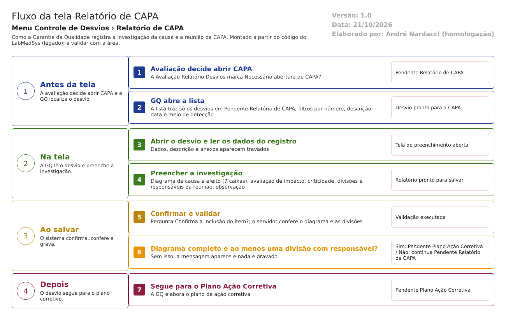

Resumo da tela
Relatório de CAPA
Nome da tela
Relatório de CAPA (a lista aparece com o título "RELATÓRIO DE CAPA" e a tela de preenchimento com "RELATÓRIO CAPA").
Para que serve
É a etapa em que a Garantia da Qualidade registra a investigação da causa do desvio e o plano de reunião: o diagrama de causa e efeito (sete caixas de texto), a avaliação de impacto, a classificação de criticidade (Crítico, Maior ou Menor) e as divisões ou seções que participam da reunião de investigação, cada uma com um responsável. Só chega aqui o desvio em que a avaliação marcou "Necessário abertura de CAPA?" (HSolutions.GQ.UI/Areas/Bloco2/Controllers/RelatorioCapaController.cs:156-250; HSolutions.GQ.Domain/Service/RelatorioCapaValidator.cs:32-45).
Caminho no menu
Controle de Desvios › Relatório de CAPA.
Quem usa
A Garantia da Qualidade, que conduz a investigação. A lista mostra todos os desvios em Pendente Relatório de CAPA, sem filtrar por área nem por usuário (HSolutions.GQ.UI/Areas/Bloco2/Controllers/RelatorioCapaController.cs:58-62). Os responsáveis escolhidos para a reunião são usuários ativos da divisão ou seção indicada (HSolutions.GQ.UI/Areas/Bloco2/Controllers/RelatorioCapaController.cs:263-287).
Em que situação o desvio chega aqui
Pendente Relatório de CAPA (HSolutions.GQ.UI/Areas/Bloco2/Controllers/RelatorioCapaController.cs:61; HSolutions.GQ.Domain/Enumeradores/TipoSituacao.cs:63-64), definida pela Avaliação Relatório Desvios quando a caixa de CAPA é marcada (HSolutions.GQ.UI/Areas/Bloco2/Controllers/AvaliacaoRNCController.cs:294-297).
Para onde vai ao salvar
Pendente Plano Ação Corretiva (HSolutions.GQ.UI/Areas/Bloco2/Controllers/RelatorioCapaController.cs:220), situação em que o plano de ação corretiva é elaborado.
Arquivos do código (caminhos relativos a 5.garantia_qualidade/app/)
- Controlador:
HSolutions.GQ.UI/Areas/Bloco2/Controllers/RelatorioCapaController.cs. - Views:
HSolutions.GQ.UI/Areas/Bloco2/Views/RelatorioCapa/Index.cshtml(lista) eHSolutions.GQ.UI/Areas/Bloco2/Views/RelatorioCapa/Editar.cshtml(preencher). ExisteHSolutions.GQ.UI/Areas/Bloco2/Views/RelatorioCapa/Visualizar.cshtml(cópia da tela de avaliação, sem ação no controlador). - Formulário comum:
HSolutions.GQ.UI/Areas/Bloco2/Views/Shared/_PartialRelatorioDesvio.cshtml, com o scriptHSolutions.GQ.UI/Areas/Bloco2/Script/PartialRelatorioDesvio.jse o modeloHSolutions.GQ.UI/Areas/Bloco2/Models/PartialRelatorioDesvioModel.cs. - Script da lista:
HSolutions.GQ.UI/Areas/Bloco2/Script/RelatorioCapaIndex.js. Modelos da lista:HSolutions.GQ.UI/Areas/Bloco2/Models/RelatorioCapaIndexModel.cseHSolutions.GQ.UI/Areas/Bloco2/Models/RelatorioCapaResultadoIndexModel.cs. Regras de ícones:HSolutions.GQ.UI/Helpers/GerenciadorAcessoTelaAvaliacaoRNCIndex.cs(a classe da CAPA está neste arquivo, trocada com a da Avaliação).
Manual do usuário
Parte 1. A lista (tela inicial)
-
No menu, clique em Controle de Desvios e depois em Relatório de CAPA. Abre a tela com o título "RELATÓRIO DE CAPA" e o quadro "Pesquisa" (
HSolutions.GQ.UI/Areas/Bloco2/Views/RelatorioCapa/Index.cshtml:5e:22). A lista abre vazia e só é preenchida ao clicar em Pesquisar. -
Preencha, se quiser, os filtros: RD/Nº (com máscara 999/99, por exemplo 009/26), Descrição (trecho), Data Início e até (dd/mm/aaaa, com calendário) e Meios de Detecção (TODAS ou um dos meios) (
HSolutions.GQ.UI/Areas/Bloco2/Views/RelatorioCapa/Index.cshtml:28-63;HSolutions.GQ.UI/Areas/Bloco2/Script/RelatorioCapaIndex.js:2-6). -
Clique em Pesquisar. A tabela mostra RD/Nº, DESCRIÇÃO, MEIO DE DETECÇÃO, DATA ABERTURA e SITUAÇÃO, com ícones em cada linha (
HSolutions.GQ.UI/Areas/Bloco2/Script/RelatorioCapaIndex.js:24-46). Só aparecem desvios em Pendente Relatório de CAPA. -
Ícones: lápis (Editar), histórico (Log) e impressora (Imprimir). Se o lápis não for oferecido, a lista mostra a lupa (Visualizar), mas essa ação não existe no controlador (ver "Falhas e pontos de atenção") (
HSolutions.GQ.UI/Helpers/GerenciadorAcessoTelaAvaliacaoRNCIndex.cs:15;HSolutions.GQ.UI/Scripts/HSGridApi.js:266-290). -
O botão Limpar esvazia os filtros e a tabela (
HSolutions.GQ.UI/Areas/Bloco2/Script/RelatorioCapaIndex.js:83-90).
Parte 2. Preencher o Relatório de CAPA (tela interna Editar)
-
Clique no lápis. Abre a tela "RELATÓRIO CAPA". Os blocos Dados, Descrição de Desvio e Anexos aparecem travados para leitura. Os blocos de preenchimento são: Reunião de Investigação da Causa Raiz, Diagrama de Causa Efeito, Avaliação de Impacto e Abrangência, Para preenchimento do SDGQ, Classificação do Grau de Criticidade e Chefe da SDGQ (
HSolutions.GQ.UI/Areas/Bloco2/Controllers/RelatorioCapaController.cs:119-153;HSolutions.GQ.UI/Areas/Bloco2/Views/RelatorioCapa/Editar.cshtml:33-37;HSolutions.GQ.UI/Areas/Bloco2/Views/Shared/_PartialRelatorioDesvio.cshtml:317-514). -
Em Reunião de Investigação da Causa Raiz: o campo CAPA/Nº fica vazio na primeira vez (o número só existe depois que a CAPA é gravada). Escolha a Divisão/Seção na lista; o campo Responsável passa a mostrar os usuários ativos daquela divisão; escolha um e clique em Adicionar. A pessoa entra na tabela abaixo (colunas Responsável e Divisão/Seção). Repita para outras divisões ou pessoas. É preciso ter pelo menos uma linha (
HSolutions.GQ.UI/Areas/Bloco2/Views/Shared/_PartialRelatorioDesvio.cshtml:319-400;HSolutions.GQ.UI/Areas/Bloco2/Script/PartialRelatorioDesvio.js:154-177). -
Se a divisão não tiver usuários ativos, aparece "Essa área não possui responsáveis." (
HSolutions.GQ.UI/Areas/Bloco2/Controllers/RelatorioCapaController.cs:284). Se você clicar em Adicionar sem escolher o responsável, nada acontece e nenhuma mensagem aparece (HSolutions.GQ.UI/Areas/Bloco2/Script/PartialRelatorioDesvio.js:156). -
Para tirar uma linha da tabela, clique no ícone de excluir dela (
HSolutions.GQ.UI/Areas/Bloco2/Views/Shared/_PartialRelatorioDesvio.cshtml:388-392;HSolutions.GQ.UI/Areas/Bloco2/Script/PartialRelatorioDesvio.js:218-231). -
Em Diagrama de Causa Efeito, escreva nas sete caixas de texto. Uma figura de espinha de peixe fica ao fundo; as seis caixas à esquerda são os ramos e a sétima, à direita, é a conclusão (comentário do código). As caixas não têm rótulo escrito. Todas as sete são obrigatórias (
HSolutions.GQ.UI/Areas/Bloco2/Views/Shared/_PartialRelatorioDesvio.cshtml:402-444;HSolutions.GQ.Domain/Service/RelatorioCapaValidator.cs:32-39). -
Em Avaliação de Impacto e Abrangência, escreva a descrição (não é obrigatória) (
HSolutions.GQ.UI/Areas/Bloco2/Views/Shared/_PartialRelatorioDesvio.cshtml:446-456). -
Em Para preenchimento do SDGQ aparece a caixa "Necessário abertura de Controle de Mudança?". Você pode marcá-la, mas esta tela não grava esse valor (
HSolutions.GQ.UI/Areas/Bloco2/Views/Shared/_PartialRelatorioDesvio.cshtml:458-468). -
Em Classificação do Grau de Criticidade, escolha Crítico, Maior ou Menor. A opção Crítico já vem marcada (
HSolutions.GQ.UI/Areas/Bloco2/Views/Shared/_PartialRelatorioDesvio.cshtml:470-488). -
Em Chefe da SDGQ, Data/Hora e Responsável aparecem travados (a data de agora e o seu nome, na primeira vez). A Observação é livre e opcional (
HSolutions.GQ.UI/Areas/Bloco2/Views/Shared/_PartialRelatorioDesvio.cshtml:490-513;HSolutions.GQ.UI/Areas/Bloco2/Models/PartialRelatorioDesvioModel.cs:295-299). -
O campo Justificativa aparece travado no fim da tela e não é gravado (
HSolutions.GQ.UI/Areas/Bloco2/Views/RelatorioCapa/Editar.cshtml:33;HSolutions.GQ.UI/Areas/Bloco2/Views/Shared/_PartialRelatorioDesvio.cshtml:839-843). -
Clique em Salvar e confirme com SIM na pergunta "Confirma a inclusão do item?" (
HSolutions.GQ.UI/Areas/Bloco2/Script/PartialRelatorioDesvio.js:377-378). -
Se faltar alguma coisa, aparece uma faixa de mensagem no bloco correspondente: "O diagrama deve ser totalmente preenchido." (bloco do diagrama) ou "Pelo menos uma Divisão/Seção precisa ser selecionada." (bloco da reunião). Quando há as duas falhas, a tela mostra apenas a última (ver "Falhas e pontos de atenção"). Nada é gravado.
-
Com tudo certo, abre "Alteração efetuada com sucesso." Ao clicar OK, volta à lista, e o desvio já está em Pendente Plano Ação Corretiva (
HSolutions.GQ.UI/Areas/Bloco2/Controllers/RelatorioCapaController.cs:220-231;HSolutions.GQ.UI/Areas/Bloco2/Script/PartialRelatorioDesvio.js:413-415). -
Voltar sai sem gravar (
HSolutions.GQ.UI/Areas/Bloco2/Script/PartialRelatorioDesvio.js:389-391).
Parte 3. Histórico e impressão
-
O ícone de histórico abre a janela Log com as alterações do desvio (
HSolutions.GQ.UI/Areas/Bloco2/Script/RelatorioCapaIndex.js:39-42). -
A impressora abre em outra aba o relatório do desvio (
HSolutions.GQ.UI/Areas/Bloco2/Controllers/RelatorioCapaController.cs:289-317).
Telas internas Visualizar, Incluir e Cancelar
- Visualizar: a lista tem a ação (lupa), mas o controlador não tem a ação
Visualizar. A view existente é cópia da tela de avaliação, escrita para outro controlador (HSolutions.GQ.UI/Areas/Bloco2/Script/RelatorioCapaIndex.js:35-38,:99-101;HSolutions.GQ.UI/Areas/Bloco2/Controllers/RelatorioCapaController.cs:36-321;HSolutions.GQ.UI/Areas/Bloco2/Views/RelatorioCapa/Visualizar.cshtml:3). Inferência: a lupa leva a erro de página não encontrada. A confirmar no teste. - Incluir e Cancelar: não existem nesta tela.
Campos da tela
Lista (tela inicial)
| Campo na tela | Tipo | Obrigatório | Regra, limite ou valores possíveis | Fonte (arquivo:linha) |
|---|---|---|---|---|
| RD/Nº (filtro) | Texto com máscara 999/99 | Não | Número e ano em dois dígitos (009/26). O servidor separa o que vem antes e depois da barra: procura o trecho no número e filtra o ano (20 + dois dígitos) | HSolutions.GQ.UI/Areas/Bloco2/Views/RelatorioCapa/Index.cshtml:28-29; HSolutions.GQ.UI/Areas/Bloco2/Script/RelatorioCapaIndex.js:6; HSolutions.GQ.UI/Areas/Bloco2/Controllers/RelatorioCapaController.cs:63-73 |
| Descrição (filtro) | Texto | Não | Procura o trecho na descrição | HSolutions.GQ.UI/Areas/Bloco2/Views/RelatorioCapa/Index.cshtml:33-34; HSolutions.GQ.UI/Areas/Bloco2/Controllers/RelatorioCapaController.cs:75-76 |
| Data Início (filtro) | Data com calendário e máscara dd/mm/aaaa | Não | Sozinha: um dia. Com Data fim: intervalo | HSolutions.GQ.UI/Areas/Bloco2/Views/RelatorioCapa/Index.cshtml:38-40; HSolutions.GQ.UI/Areas/Bloco2/Script/RelatorioCapaIndex.js:2-3; HSolutions.GQ.UI/Areas/Bloco2/Controllers/RelatorioCapaController.cs:78-90 |
| até / Data fim (filtro) | Data com calendário e máscara dd/mm/aaaa | Não | Sozinha, é ignorada | HSolutions.GQ.UI/Areas/Bloco2/Views/RelatorioCapa/Index.cshtml:43-44; HSolutions.GQ.UI/Areas/Bloco2/Script/RelatorioCapaIndex.js:4-5; HSolutions.GQ.UI/Areas/Bloco2/Controllers/RelatorioCapaController.cs:78 |
| Meios de Detecção (filtro) | Lista | Não | TODAS (0), Nenhum (0), Processo/Produção (1), Auditoria Interna (2), Inspeção Sanitária (3), Controle da Qualidade (4), Garantia da Qualidade (5), SAC/Fármaco (6), Outros (99). "TODAS" e "Nenhum" têm o mesmo valor 0 e não filtram | HSolutions.GQ.UI/Areas/Bloco2/Views/RelatorioCapa/Index.cshtml:57-63; HSolutions.GQ.UI/Areas/Bloco2/Models/RelatorioCapaIndexModel.cs:20; HSolutions.GQ.UI/Helpers/HelperMeiosDeteccao.cs:20-36; HSolutions.GQ.Domain/Enumeradores/TipoMetodoDeteccaoNaoConformidade.cs:13-27; HSolutions.GQ.UI/Areas/Bloco2/Controllers/RelatorioCapaController.cs:92-96 |
| Coluna RD/Nº | Texto | Sem entrada | Número com ano (009/26) | HSolutions.GQ.UI/Areas/Bloco2/Script/RelatorioCapaIndex.js:25; HSolutions.GQ.UI/Areas/Bloco2/Models/RelatorioCapaResultadoIndexModel.cs:43 |
| Coluna DESCRIÇÃO | Texto | Sem entrada | Descrição do desvio | HSolutions.GQ.UI/Areas/Bloco2/Script/RelatorioCapaIndex.js:26 |
| Coluna MEIO DE DETECÇÃO | Texto | Sem entrada | Meio escolhido na pré-avaliação | HSolutions.GQ.UI/Areas/Bloco2/Script/RelatorioCapaIndex.js:27; HSolutions.GQ.UI/Areas/Bloco2/Models/RelatorioCapaResultadoIndexModel.cs:45 |
| Coluna DATA ABERTURA | Data | Sem entrada | Data de criação, dd/MM/aaaa | HSolutions.GQ.UI/Areas/Bloco2/Script/RelatorioCapaIndex.js:28; HSolutions.GQ.UI/Areas/Bloco2/Models/RelatorioCapaResultadoIndexModel.cs:23-28 |
| Coluna SITUAÇÃO | Texto | Sem entrada | Sempre "Pendente Relatório de CAPA" | HSolutions.GQ.UI/Areas/Bloco2/Script/RelatorioCapaIndex.js:29; HSolutions.GQ.UI/Areas/Bloco2/Models/RelatorioCapaResultadoIndexModel.cs:47 |
| Coluna Id | Número, oculta | Sem entrada | Vai no endereço do lápis | HSolutions.GQ.UI/Areas/Bloco2/Script/RelatorioCapaIndex.js:24 |
Tela interna Editar (formulário comum)
Nesta tela, os blocos Dados, Descrição de Desvio, Anexos e Justificativa são travados por script (HSolutions.GQ.UI/Areas/Bloco2/Views/RelatorioCapa/Editar.cshtml:33); os blocos da CAPA ficam livres.
| Campo na tela | Tipo | Obrigatório | Regra, limite ou valores possíveis | Fonte (arquivo:linha) |
|---|---|---|---|---|
| Dados > RD/Nº | Texto travado | Não | Número com ano | HSolutions.GQ.UI/Areas/Bloco2/Views/Shared/_PartialRelatorioDesvio.cshtml:91-92; HSolutions.GQ.UI/Areas/Bloco2/Models/PartialRelatorioDesvioModel.cs:190 |
| Dados > Data da abertura | Texto travado | Não | Data de criação do desvio (nesta tela, o código troca a data de agora pela real) | HSolutions.GQ.UI/Areas/Bloco2/Views/Shared/_PartialRelatorioDesvio.cshtml:95-96; HSolutions.GQ.UI/Areas/Bloco2/Models/PartialRelatorioDesvioModel.cs:302 |
| Dados > Local da ocorrência | Texto travado | Asterisco | Vem do registro | HSolutions.GQ.UI/Areas/Bloco2/Views/Shared/_PartialRelatorioDesvio.cshtml:102-103 |
| Dados > Tipo de item | Opção única: Produto, Equipamento, Material | Não | Travada | HSolutions.GQ.UI/Areas/Bloco2/Views/Shared/_PartialRelatorioDesvio.cshtml:112-127; HSolutions.GQ.UI/Areas/Bloco2/Models/PartialRelatorioDesvioModel.cs:147-148 |
| Dados > item | Texto travado | Não | Descrição do item | HSolutions.GQ.UI/Areas/Bloco2/Views/Shared/_PartialRelatorioDesvio.cshtml:130 |
| Dados > Nº Lote, Registro de entrada, Adicionar, buscar | Lista e botões | Asterisco | Escondidos | HSolutions.GQ.UI/Areas/Bloco2/Views/Shared/_PartialRelatorioDesvio.cshtml:143-181; HSolutions.GQ.UI/Areas/Bloco2/Views/RelatorioCapa/Editar.cshtml:34-36 |
| Dados > Nº Tag | Lista travada | Asterisco | Só para equipamento | HSolutions.GQ.UI/Areas/Bloco2/Views/Shared/_PartialRelatorioDesvio.cshtml:151-154 |
| Dados > tabela de lotes | Tabela | Não | Lotes copiados no registro | HSolutions.GQ.UI/Areas/Bloco2/Views/Shared/_PartialRelatorioDesvio.cshtml:178 |
| Descrição de Desvio > Não Conformidade | Texto longo (3 linhas) | Asterisco | Travado | HSolutions.GQ.UI/Areas/Bloco2/Views/Shared/_PartialRelatorioDesvio.cshtml:191-192 |
| Descrição de Desvio > Observação | Texto longo (4 linhas) | Não | Travado | HSolutions.GQ.UI/Areas/Bloco2/Views/Shared/_PartialRelatorioDesvio.cshtml:198-199 |
| Anexos > Arquivo e Descrição | Seleção de arquivo e texto | Não | Travados; Enviar escondido | HSolutions.GQ.UI/Views/Shared/_UploadArquivo.cshtml:76, :82; HSolutions.GQ.UI/Areas/Bloco2/Views/RelatorioCapa/Editar.cshtml:36 |
| Anexos > tabela (CÓDIGO, DESCRIÇÃO, ARQUIVO, TAMANHO) | Tabela | Não | Só abrir; excluir escondido | HSolutions.GQ.UI/Views/Shared/_GridAnexos.cshtml:5-60; HSolutions.GQ.UI/Areas/Bloco2/Views/RelatorioCapa/Editar.cshtml:37 |
| Anexos > Observação | Texto travado | Não | Observação do anexo | HSolutions.GQ.UI/Areas/Bloco2/Views/Shared/_PartialRelatorioDesvio.cshtml:231-232 |
| Relatado por > Data/Hora | Texto travado | Não | Data de criação do desvio | HSolutions.GQ.UI/Areas/Bloco2/Views/Shared/_PartialRelatorioDesvio.cshtml:244-245; HSolutions.GQ.UI/Areas/Bloco2/Models/PartialRelatorioDesvioModel.cs:302 |
| Relatado por > Responsável | Texto travado | Não | Quem criou o desvio | HSolutions.GQ.UI/Areas/Bloco2/Views/Shared/_PartialRelatorioDesvio.cshtml:249-250; HSolutions.GQ.UI/Areas/Bloco2/Models/PartialRelatorioDesvioModel.cs:301 |
| Relatado por > Área do Relator | Texto travado | Não | Área de quem registrou | HSolutions.GQ.UI/Areas/Bloco2/Views/Shared/_PartialRelatorioDesvio.cshtml:254-255; HSolutions.GQ.UI/Areas/Bloco2/Models/PartialRelatorioDesvioModel.cs:178 |
| Reunião > CAPA/Nº | Texto travado | Não | Número da CAPA com 4 dígitos (0001). Vazio até a CAPA ser gravada | HSolutions.GQ.UI/Areas/Bloco2/Views/Shared/_PartialRelatorioDesvio.cshtml:326-327; HSolutions.GQ.Domain/Entities/Bloco2/ControleDesvios/RelatorioCapa.cs:13-26; HSolutions.GQ.UI/Areas/Bloco2/Models/PartialRelatorioDesvioModel.cs:284 |
| Reunião > Divisão/Seção | Lista (com "SELECIONE") | Sim (asterisco; pelo menos uma linha na tabela) | Locais do Principal que têm responsável. Escolher dispara a busca de responsáveis | HSolutions.GQ.UI/Areas/Bloco2/Views/Shared/_PartialRelatorioDesvio.cshtml:332-333; HSolutions.GQ.UI/Areas/Bloco2/Models/PartialRelatorioDesvioModel.cs:304-317; HSolutions.GQ.UI/Areas/Bloco2/Script/PartialRelatorioDesvio.js:92 |
| Reunião > Responsável | Lista | Sim (asterisco) | Desabilitada até escolher a divisão. Mostra usuários ativos cuja Divisão é a escolhida. A primeira opção é "SELECIONE" | HSolutions.GQ.UI/Areas/Bloco2/Views/Shared/_PartialRelatorioDesvio.cshtml:336-338; HSolutions.GQ.UI/Areas/Bloco2/Controllers/RelatorioCapaController.cs:263-287; 1.principal/app/LaboSys_UI/Api/UsuarioController.cs:327-343 |
| Reunião > Adicionar | Botão | Não | Só age quando divisão e responsável estão escolhidos; nada avisa quando faltam. Não aceita a mesma pessoa duas vezes na mesma divisão | HSolutions.GQ.UI/Areas/Bloco2/Views/Shared/_PartialRelatorioDesvio.cshtml:343; HSolutions.GQ.UI/Areas/Bloco2/Script/PartialRelatorioDesvio.js:154-177, :198-216 |
| Reunião > tabela (Responsável, Divisão/Seção, excluir) | Tabela | Pelo menos uma linha | Mensagem vazia "Nenhuma divisão/seção listada." | HSolutions.GQ.UI/Areas/Bloco2/Views/Shared/_PartialRelatorioDesvio.cshtml:349-397; HSolutions.GQ.UI/Areas/Bloco2/Script/PartialRelatorioDesvio.js:233-254 |
| Diagrama de Causa Efeito > caixa 1 (txtDiagrama1) | Texto longo (10 linhas) | Sim | Sem rótulo escrito; sem limite no código | HSolutions.GQ.UI/Areas/Bloco2/Views/Shared/_PartialRelatorioDesvio.cshtml:415; HSolutions.GQ.Domain/Service/RelatorioCapaValidator.cs:32-39; Hsolutions.GQ.DB/Tables/TBL_RELATORIO_CAPA.sql:3 |
| Diagrama > caixa 2 (txtDiagrama2) | Texto longo (10 linhas) | Sim | Idem | HSolutions.GQ.UI/Areas/Bloco2/Views/Shared/_PartialRelatorioDesvio.cshtml:418 |
| Diagrama > caixa 3 (txtDiagrama3) | Texto longo (10 linhas) | Sim | Idem | HSolutions.GQ.UI/Areas/Bloco2/Views/Shared/_PartialRelatorioDesvio.cshtml:421 |
| Diagrama > caixa 4 (txtDiagrama4) | Texto longo (10 linhas) | Sim | Idem | HSolutions.GQ.UI/Areas/Bloco2/Views/Shared/_PartialRelatorioDesvio.cshtml:426 |
| Diagrama > caixa 5 (txtDiagrama5) | Texto longo (10 linhas) | Sim | Idem | HSolutions.GQ.UI/Areas/Bloco2/Views/Shared/_PartialRelatorioDesvio.cshtml:429 |
| Diagrama > caixa 6 (txtDiagrama6) | Texto longo (10 linhas) | Sim | Idem | HSolutions.GQ.UI/Areas/Bloco2/Views/Shared/_PartialRelatorioDesvio.cshtml:432 |
| Diagrama > caixa 7 (txtDiagrama7, conclusão) | Texto longo (10 linhas) | Sim | Fica à direita; o código a chama de "conclusão" | HSolutions.GQ.UI/Areas/Bloco2/Views/Shared/_PartialRelatorioDesvio.cshtml:437-439 |
| Avaliação de Impacto e Abrangência > Descrição | Texto | Não | Sem limite no código | HSolutions.GQ.UI/Areas/Bloco2/Views/Shared/_PartialRelatorioDesvio.cshtml:451-452; HSolutions.GQ.Domain/Service/RelatorioCapaValidator.cs:23-47 |
| Para preenchimento do SDGQ > Necessário abertura de Controle de Mudança? | Caixa de marcação | Não | Pode ser marcada, mas o servidor não lê o valor | HSolutions.GQ.UI/Areas/Bloco2/Views/Shared/_PartialRelatorioDesvio.cshtml:463-464; HSolutions.GQ.UI/Areas/Bloco2/Controllers/RelatorioCapaController.cs:156-250 |
| Classificação do Grau de Criticidade | Opção única: Crítico (0), Maior (1), Menor (2) | Sim, na prática (Crítico vem marcado) | Sem escolha, vale Crítico, o valor zero do enum | HSolutions.GQ.UI/Areas/Bloco2/Views/Shared/_PartialRelatorioDesvio.cshtml:475-484; HSolutions.GQ.Domain/Enumeradores/TipoCriticidade.cs:13-17; HSolutions.GQ.Domain/Entities/Bloco2/ControleDesvios/RelatorioCapa.cs:38 |
| Chefe da SDGQ > Data/Hora | Texto travado | Não | Primeira vez: data de agora. Depois: data gravada | HSolutions.GQ.UI/Areas/Bloco2/Views/Shared/_PartialRelatorioDesvio.cshtml:495-496; HSolutions.GQ.UI/Areas/Bloco2/Models/PartialRelatorioDesvioModel.cs:275, :298 |
| Chefe da SDGQ > Responsável | Texto travado | Não | Primeira vez: o usuário que abriu a tela. É este texto que o servidor grava como responsável | HSolutions.GQ.UI/Areas/Bloco2/Views/Shared/_PartialRelatorioDesvio.cshtml:500-501; HSolutions.GQ.UI/Areas/Bloco2/Models/PartialRelatorioDesvioModel.cs:297; HSolutions.GQ.UI/Areas/Bloco2/Controllers/RelatorioCapaController.cs:171 |
| Chefe da SDGQ > Observação | Texto longo (4 linhas) | Não | Livre | HSolutions.GQ.UI/Areas/Bloco2/Views/Shared/_PartialRelatorioDesvio.cshtml:505-507; HSolutions.GQ.UI/Areas/Bloco2/Controllers/RelatorioCapaController.cs:181 |
| Justificativa | Texto travado | Marcado com asterisco | Travado pelo script; não é gravado | HSolutions.GQ.UI/Areas/Bloco2/Views/Shared/_PartialRelatorioDesvio.cshtml:842-843; HSolutions.GQ.UI/Areas/Bloco2/Views/RelatorioCapa/Editar.cshtml:33 |
| Campos ocultos (hfId, hfIdLocalOcorrencia, hfIdAreaEnvolvida, hfEAcaoImediata, hfDisableFields, hfActionType, hfDisabledSalvar, hfSituacaoAtual) | Ocultos | Sem entrada | Levam o número do desvio e o estado da tela | HSolutions.GQ.UI/Areas/Bloco2/Views/Shared/_PartialRelatorioDesvio.cshtml:75-82 |
| Janelas "Locais" e "Itens" | Janelas ocultas | Sem entrada | Nunca abrem nesta tela | HSolutions.GQ.UI/Areas/Bloco2/Views/Shared/_PartialRelatorioDesvio.cshtml:867-888 |
Nesta tela não aparecem os blocos Meios de Detecção do Desvio e Ação Corretiva Imediata (HSolutions.GQ.UI/Areas/Bloco2/Views/Shared/_PartialRelatorioDesvio.cshtml:264-265, :517-520).
Botões e ações
| Botão ou ação | Quando aparece | O que faz | Para onde leva o desvio | Fonte |
|---|---|---|---|---|
| Pesquisar | Sempre, na lista | Lista os desvios em Pendente Relatório de CAPA, aplicando os filtros | Não muda | HSolutions.GQ.UI/Areas/Bloco2/Views/RelatorioCapa/Index.cshtml:50; HSolutions.GQ.UI/Areas/Bloco2/Controllers/RelatorioCapaController.cs:49-115 |
| Limpar | Sempre, na lista | Esvazia os filtros e a tabela | Não muda | HSolutions.GQ.UI/Areas/Bloco2/Views/RelatorioCapa/Index.cshtml:49; HSolutions.GQ.UI/Areas/Bloco2/Script/RelatorioCapaIndex.js:83-90 |
| Editar (lápis) | Desvio em Pendente Relatório de CAPA | Abre a tela de preenchimento | Não muda ao abrir | HSolutions.GQ.UI/Helpers/GerenciadorAcessoTelaAvaliacaoRNCIndex.cs:15; HSolutions.GQ.UI/Scripts/HSGridApi.js:266-276; HSolutions.GQ.UI/Areas/Bloco2/Controllers/RelatorioCapaController.cs:119-153 |
| Visualizar (lupa) | Quando o lápis não é oferecido | Tenta abrir uma tela que o controlador não tem | Não se aplica | HSolutions.GQ.UI/Areas/Bloco2/Script/RelatorioCapaIndex.js:35-38, :99-101; HSolutions.GQ.UI/Scripts/HSGridApi.js:277-290 |
| Log (histórico) | Todas as linhas | Abre a janela com as alterações | Não muda | HSolutions.GQ.UI/Areas/Bloco2/Script/RelatorioCapaIndex.js:39-42 |
| Imprimir | Todas as linhas | Gera o relatório do desvio em outra aba | Não muda | HSolutions.GQ.UI/Areas/Bloco2/Script/RelatorioCapaIndex.js:43-46, :103-105; HSolutions.GQ.UI/Areas/Bloco2/Controllers/RelatorioCapaController.cs:289-317 |
| Divisão/Seção (lista) | Tela Editar | Ao escolher, busca os responsáveis da divisão | Não muda | HSolutions.GQ.UI/Areas/Bloco2/Script/PartialRelatorioDesvio.js:92, :256-293; HSolutions.GQ.UI/Areas/Bloco2/Controllers/RelatorioCapaController.cs:263-287 |
| Adicionar | Tela Editar | Põe a pessoa e a divisão na tabela da reunião | Não muda até salvar | HSolutions.GQ.UI/Areas/Bloco2/Views/Shared/_PartialRelatorioDesvio.cshtml:343; HSolutions.GQ.UI/Areas/Bloco2/Script/PartialRelatorioDesvio.js:154-177 |
| Excluir (na tabela da reunião) | Tela Editar, em cada linha | Tira a linha da tabela | Não muda até salvar | HSolutions.GQ.UI/Areas/Bloco2/Views/Shared/_PartialRelatorioDesvio.cshtml:388-392; HSolutions.GQ.UI/Areas/Bloco2/Script/PartialRelatorioDesvio.js:218-231 |
| Salvar | Tela Editar, desvio em Pendente Relatório de CAPA | Pede confirmação, confere o diagrama e as divisões e grava o relatório | Pendente Plano Ação Corretiva | HSolutions.GQ.UI/Areas/Bloco2/Views/Shared/_PartialRelatorioDesvio.cshtml:855-858; HSolutions.GQ.UI/Areas/Bloco2/Script/PartialRelatorioDesvio.js:295-378; HSolutions.GQ.UI/Areas/Bloco2/Controllers/RelatorioCapaController.cs:155-250 |
| SIM / NÃO (confirmação) | Ao clicar em Salvar | SIM envia a gravação; NÃO não faz nada | Sem mudança com NÃO | HSolutions.GQ.UI/Views/Shared/_ConfirmacaoPopUpPartail.cshtml:8-9; HSolutions.GQ.UI/Areas/Bloco2/Script/PartialRelatorioDesvio.js:394-405 |
| OK (resultado) | Depois da gravação | Fecha o aviso; no sucesso volta à lista | Sem mudança | HSolutions.GQ.UI/Views/Shared/_SucessoErrorPopUpPartail.cshtml:32-40; HSolutions.GQ.UI/Areas/Bloco2/Script/PartialRelatorioDesvio.js:413-415 |
| Voltar | Tela Editar | Volta à lista sem gravar | Sem mudança | HSolutions.GQ.UI/Areas/Bloco2/Views/Shared/_PartialRelatorioDesvio.cshtml:854; HSolutions.GQ.UI/Areas/Bloco2/Script/PartialRelatorioDesvio.js:389-391 |
| Ícone de anexo | Em cada anexo | Abre o arquivo | Sem mudança | HSolutions.GQ.UI/Views/Shared/_GridAnexos.cshtml:56-60 |
| Caixa de Controle de Mudança | Tela Editar | Pode ser marcada, sem efeito ao salvar | Sem mudança | HSolutions.GQ.UI/Areas/Bloco2/Views/Shared/_PartialRelatorioDesvio.cshtml:464 |
| Cancelar o desvio, Incluir | Não existem nesta tela | Não se aplicam | Não se aplicam | HSolutions.GQ.UI/Areas/Bloco2/Controllers/RelatorioCapaController.cs:36-321 |
Mensagens do sistema
| Mensagem (texto exato do código) | Quando aparece | Fonte |
|---|---|---|
| O diagrama deve ser totalmente preenchido. | Salvar com qualquer uma das sete caixas vazia (aparece no bloco do diagrama) | HSolutions.GQ.Domain/Service/RelatorioCapaValidator.cs:37; HSolutions.GQ.UI/Areas/Bloco2/Script/PartialRelatorioDesvio.js:490-494 |
| Pelo menos uma Divisão/Seção precisa ser selecionada. | Salvar sem nenhuma pessoa na tabela da reunião (aparece no bloco da reunião) | HSolutions.GQ.Domain/Service/RelatorioCapaValidator.cs:43; HSolutions.GQ.UI/Areas/Bloco2/Script/PartialRelatorioDesvio.js:496-500 |
| Entidade de domínio não pode ser nula. | Desvio ou CAPA não encontrados na validação | HSolutions.GQ.Domain/Service/RelatorioCapaValidator.cs:17, :27 |
| Essa área não possui responsáveis. | Divisão escolhida sem usuários ativos | HSolutions.GQ.UI/Areas/Bloco2/Controllers/RelatorioCapaController.cs:284; HSolutions.GQ.UI/Areas/Bloco2/Script/PartialRelatorioDesvio.js:283-285 |
| Nenhuma divisão/seção listada. | Tabela da reunião vazia | HSolutions.GQ.UI/Areas/Bloco2/Views/Shared/_PartialRelatorioDesvio.cshtml:369; HSolutions.GQ.UI/Areas/Bloco2/Script/PartialRelatorioDesvio.js:251 |
| Confirma a inclusão do item? | Ao clicar em Salvar (fala em "inclusão", mesmo sendo alteração) | HSolutions.GQ.UI/Areas/Bloco2/Script/PartialRelatorioDesvio.js:377 |
| Alteração efetuada com sucesso. | Gravação concluída | HSolutions.GQ.UI/Controllers/GQControllerBase.cs:95; HSolutions.GQ.UI/Areas/Bloco2/Controllers/RelatorioCapaController.cs:229 |
| Ocorreu um erro inesperado. | Falha ao salvar ou ao abrir a tela (volta à lista) | HSolutions.GQ.UI/Controllers/GQControllerBase.cs:93; HSolutions.GQ.UI/Areas/Bloco2/Controllers/RelatorioCapaController.cs:150, :247 |
| Ocorreu um erro interno não esperado. | A chamada ao servidor falha | HSolutions.GQ.UI/Scripts/HSApi.js:23 |
| A pesquisa não retornou nenhum resultado. | A lista volta sem linhas | HSolutions.GQ.UI/Scripts/HSGridApi.js:209 |
| Não foi possível obter os relatórios de não conformidades | Erro ao pesquisar | HSolutions.GQ.UI/Areas/Bloco2/Controllers/RelatorioCapaController.cs:113 |
| Não foi possível imprimir a solicitação de mudança | Erro ao imprimir (texto trocado: é uma cópia do código de outra tela; fala em "solicitação de mudança") | HSolutions.GQ.UI/Areas/Bloco2/Controllers/RelatorioCapaController.cs:315 |
| SELECIONE | Primeira opção das listas Divisão/Seção e Responsável | HSolutions.GQ.UI/Areas/Bloco2/Views/Shared/_PartialRelatorioDesvio.cshtml:333; HSolutions.GQ.UI/Areas/Bloco2/Controllers/RelatorioCapaController.cs:268 |
| SIM / NÃO / OK | Botões das janelas de confirmação e de resultado | HSolutions.GQ.UI/Views/Shared/_ConfirmacaoPopUpPartail.cshtml:8-9; HSolutions.GQ.UI/Views/Shared/_SucessoErrorPopUpPartail.cshtml:10 |
Observação: se as duas recusas (diagrama e divisão) acontecem juntas, a tela só mostra a última, que é a da divisão (HSolutions.GQ.UI/Areas/Bloco2/Script/PartialRelatorioDesvio.js:473-521).
Regras de negócio
| ID | Regra | Fonte | Situação |
|---|---|---|---|
| RN-GQ-040 | O diagrama de causa e efeito tem 7 campos de texto e todos são obrigatórios ("O diagrama deve ser totalmente preenchido.") | HSolutions.GQ.Domain/Service/RelatorioCapaValidator.cs:32-39; HSolutions.GQ.Domain/Entities/Bloco2/ControleDesvios/RelatorioCapa.cs:28-34 |
Extraída; caminho feliz validado em 16/10/2026 (CT-GQ-022) |
| RN-GQ-041 | Registra a avaliação de impacto e a criticidade (crítico, maior ou menor). Nenhum dos dois é validado: o impacto pode ficar vazio e a criticidade, sem escolha, vale Crítico | HSolutions.GQ.Domain/Entities/Bloco2/ControleDesvios/RelatorioCapa.cs:36-38; HSolutions.GQ.Domain/Service/RelatorioCapaValidator.cs:23-47; HSolutions.GQ.UI/Areas/Bloco2/Views/Shared/_PartialRelatorioDesvio.cshtml:475 |
A confirmar no teste |
| RN-GQ-042 | Pelo menos uma divisão ou seção precisa participar da reunião, com um responsável. A divisão escolhida precisa ter usuários ativos ("Essa área não possui responsáveis.") | HSolutions.GQ.Domain/Service/RelatorioCapaValidator.cs:41-45; HSolutions.GQ.UI/Areas/Bloco2/Controllers/RelatorioCapaController.cs:263-287; 1.principal/app/LaboSys_UI/Api/UsuarioController.cs:327-343 |
Extraída; caminho feliz validado em 16/10/2026 (CT-GQ-022) |
| RN-GQ-043 | Ao salvar, o desvio vai para Pendente Plano Ação Corretiva | HSolutions.GQ.UI/Areas/Bloco2/Controllers/RelatorioCapaController.cs:220 |
Validada no teste (16/10/2026, CT-GQ-022) |
| RN-GQ-044 | Não há campo para justificar erro humano como causa (RDC 658/2022, art. 340) | HSolutions.GQ.UI/Areas/Bloco2/Views/Shared/_PartialRelatorioDesvio.cshtml:317-514 |
Extraída |
| RN-GQ-D06-01 | A lista traz só os desvios em Pendente Relatório de CAPA que não estão excluídos | HSolutions.GQ.UI/Areas/Bloco2/Controllers/RelatorioCapaController.cs:60-61 |
Extraída |
| RN-GQ-D06-02 | O filtro RD/Nº tem máscara 999/99. O servidor separa número e ano; sem barra, só filtra o número; com a barra, filtra também o ano (20 + dois dígitos) | HSolutions.GQ.UI/Areas/Bloco2/Script/RelatorioCapaIndex.js:6; HSolutions.GQ.UI/Areas/Bloco2/Controllers/RelatorioCapaController.cs:63-73 |
A confirmar no teste |
| RN-GQ-D06-03 | O filtro Meios de Detecção usa a lista completa do enum, inclusive "Nenhum", que tem valor 0 como "TODAS" e por isso não filtra | HSolutions.GQ.UI/Helpers/HelperMeiosDeteccao.cs:20-36; HSolutions.GQ.UI/Areas/Bloco2/Controllers/RelatorioCapaController.cs:92-96 |
A confirmar no teste |
| RN-GQ-D06-04 | Filtros de texto e de data como nas outras listas: só início = um dia; início e fim = intervalo; só fim ignorada | HSolutions.GQ.UI/Areas/Bloco2/Controllers/RelatorioCapaController.cs:75-90 |
A confirmar no teste |
| RN-GQ-D06-05 | O lápis só aparece em Pendente Relatório de CAPA; fora disso, a lupa, que não tem ação | HSolutions.GQ.UI/Helpers/GerenciadorAcessoTelaAvaliacaoRNCIndex.cs:15; HSolutions.GQ.UI/Areas/Bloco2/Models/RelatorioCapaResultadoIndexModel.cs:50; HSolutions.GQ.UI/Areas/Bloco2/Script/RelatorioCapaIndex.js:99-101 |
Extraída |
| RN-GQ-D06-06 | A criticidade vem pré-marcada como Crítico (valor 0 do enum) e a tela não tem estado "não escolhido" | HSolutions.GQ.Domain/Enumeradores/TipoCriticidade.cs:13; HSolutions.GQ.UI/Areas/Bloco2/Views/Shared/_PartialRelatorioDesvio.cshtml:475 |
A confirmar no teste |
| RN-GQ-D06-07 | O responsável e a data da CAPA gravados são os que vêm da tela (campos travados); o código do usuário responsável não é gravado | HSolutions.GQ.UI/Areas/Bloco2/Controllers/RelatorioCapaController.cs:171, :173, :178; HSolutions.GQ.Domain/Entities/Bloco2/ControleDesvios/RelatorioCapa.cs:40-41 |
A confirmar no teste |
| RN-GQ-D06-08 | A gravação cria a CAPA na primeira vez; nas seguintes atualiza e apaga e recria a lista de divisões da reunião | HSolutions.GQ.UI/Areas/Bloco2/Controllers/RelatorioCapaController.cs:168-218 |
A confirmar no teste |
| RN-GQ-D06-09 | A caixa "Necessário abertura de Controle de Mudança?" aparece nesta tela mas o servidor não lê o valor | HSolutions.GQ.UI/Areas/Bloco2/Views/Shared/_PartialRelatorioDesvio.cshtml:464; HSolutions.GQ.UI/Areas/Bloco2/Controllers/RelatorioCapaController.cs:156-250 |
A confirmar no teste |
| RN-GQ-D06-10 | O número da CAPA (CAPA/Nº) é o código interno do registro da CAPA, mostrado com 4 dígitos; vazio na primeira edição | HSolutions.GQ.Domain/Entities/Bloco2/ControleDesvios/RelatorioCapa.cs:13-26; HSolutions.GQ.UI/Areas/Bloco2/Models/PartialRelatorioDesvioModel.cs:284 |
A confirmar no teste |
| RN-GQ-D06-11 | A lista de Divisão/Seção vem do Principal (locais com responsável); a de Responsável, dos usuários ativos cuja Divisão é a escolhida | HSolutions.GQ.Services/Principal/AreaService.cs:23-32; HSolutions.GQ.UI/Areas/Bloco2/Controllers/RelatorioCapaController.cs:271; 1.principal/app/LaboSys_UI/Api/UsuarioController.cs:327-343 |
Extraída |
| RN-GQ-D06-12 | Quando há várias recusas, só a última aparece | HSolutions.GQ.UI/Areas/Bloco2/Script/PartialRelatorioDesvio.js:473-521 |
A confirmar no teste |
| RN-GQ-D06-13 | A mesma pessoa não entra duas vezes na mesma divisão; excluir uma linha tira todas as linhas da mesma divisão | HSolutions.GQ.UI/Areas/Bloco2/Script/PartialRelatorioDesvio.js:198-216, :218-231 |
A confirmar no teste |
| RN-GQ-D06-14 | O campo Justificativa é travado e não é gravado; o histórico recebe justificativa vazia | HSolutions.GQ.UI/Areas/Bloco2/Views/RelatorioCapa/Editar.cshtml:33; HSolutions.GQ.UI/Areas/Bloco2/Controllers/RelatorioCapaController.cs:228 |
A confirmar no teste |
| RN-GQ-D06-15 | O histórico da gravação registra a mudança de situação do desvio e a ligação da nova CAPA ao desvio, mas não o conteúdo do diagrama, da criticidade, nem das divisões | HSolutions.GQ.UI/Areas/Bloco2/Controllers/RelatorioCapaController.cs:228; HSolutions.GQ.Infrastructure/Repository/RepositoryBase.cs:148-270, :389-390 |
A confirmar no teste |
| RN-GQ-D06-16 | A gravação define a situação do desvio sem conferir a situação em que ele está | HSolutions.GQ.UI/Areas/Bloco2/Controllers/RelatorioCapaController.cs:220 |
A confirmar no teste |
| RN-GQ-D06-17 | O ícone Imprimir usa o relatório de desvio do tipo "rptRNC"; o modelo de relatório é o mesmo das outras impressões | HSolutions.GQ.UI/Areas/Bloco2/Controllers/RelatorioCapaController.cs:306; HSolutions.GQ.Reports/Bloco2/RNCRelatorio.cs:44, :143 |
A confirmar no teste |
| RN-GQ-D06-18 | Esta tela não tem cancelamento nem inclusão; a lupa não tem ação | HSolutions.GQ.UI/Areas/Bloco2/Controllers/RelatorioCapaController.cs:36-321 |
Extraída |
Situações e histórico
Situação de entrada
- Pendente Relatório de CAPA (28), definida pela Avaliação Relatório Desvios (
HSolutions.GQ.Domain/Enumeradores/TipoSituacao.cs:63-64;HSolutions.GQ.UI/Areas/Bloco2/Controllers/AvaliacaoRNCController.cs:296).
Situação de saída
- Pendente Plano Ação Corretiva (16), ao salvar (
HSolutions.GQ.UI/Areas/Bloco2/Controllers/RelatorioCapaController.cs:220;HSolutions.GQ.Domain/Enumeradores/TipoSituacao.cs:39-40). - Sem recusa de CAPA nem cancelamento nesta tela.
O que grava na trilha de auditoria (histórico)
- A mudança de situação do desvio, com valor antigo e novo, pela rotina geral (
HSolutions.GQ.Infrastructure/Repository/RepositoryBase.cs:296-362). - A ligação da nova CAPA ao desvio, como alteração de relacionamento (Inferência a partir de
HSolutions.GQ.Infrastructure/Repository/RepositoryBase.cs:148-270). A confirmar no teste, pelo Log. - Se a CAPA for regravada por endereço, as mudanças de campo da CAPA (valor antigo e novo) pela rotina geral.
O que não grava
- O conteúdo da primeira gravação da CAPA (diagrama, criticidade, impacto, divisões): a lista de inclusões é montada e não gravada (
HSolutions.GQ.Infrastructure/Repository/RepositoryBase.cs:389-390). O conteúdo existe só nas tabelas da própria CAPA. - A justificativa: sempre vazia (
HSolutions.GQ.UI/Areas/Bloco2/Controllers/RelatorioCapaController.cs:228). - O responsável (usuário) pela CAPA: só o nome vindo da tela (
HSolutions.GQ.UI/Areas/Bloco2/Controllers/RelatorioCapaController.cs:171).
Dados
Tabelas do banco tocadas
| Tabela | Colunas principais | Chaves | O que acontece | Fonte |
|---|---|---|---|---|
| TBL_RELATORIO_CAPA | Diagrama1 a Diagrama7, AvaliacaoImpacto, Criticidade, NomeResponsavel, Observacao, DATA_CRIACAO | Chave ID_RELATORIO_CAPA | Gravada: uma linha por CAPA | Hsolutions.GQ.DB/Tables/TBL_RELATORIO_CAPA.sql:2-25; HSolutions.GQ.Domain/Entities/Bloco2/ControleDesvios/RelatorioCapa.cs:28-45 |
| TBL_RELATORIO_CAPA_AREA_REUNIAO | IdAreaResponsavel, NomeAreaResponsavel, IdResponsavel, NomeResponsavel, RelatorioCapa_Id | Chave ID_RELATORIO_CAPA_AREA_REUNIAO; liga a TBL_RELATORIO_CAPA | Gravada: uma linha por pessoa da reunião | Hsolutions.GQ.DB/Tables/TBL_RELATORIO_CAPA_AREA_REUNIAO.sql:2-23; HSolutions.GQ.UI/Areas/Bloco2/Controllers/RelatorioCapaController.cs:193-218 |
| TBL_REGISTRO_RNC | Situacao, RelatorioCapa_Id | Chave ID_REGISTRO_RNC; RelatorioCapa_Id liga à CAPA | Lida; a Situacao e o vínculo com a CAPA são gravados | Hsolutions.GQ.DB/Tables/TBL_REGISTRO_RNC.sql:2-47; HSolutions.GQ.UI/Areas/Bloco2/Controllers/RelatorioCapaController.cs:168-174, :220 |
| TBL_AVALIACAO_RNC | NecessarioAberturaCapa, NecessarioAberturaControleMudanca | Chave própria | Lida (para mostrar a caixa de controle de mudança) | HSolutions.GQ.UI/Areas/Bloco2/Models/PartialRelatorioDesvioModel.cs:168-173 |
| TBL_ITEM_REGISTRO_DESVIO, lotes, TBL_ANEXO | Item e anexos do desvio | Chaves próprias | Lidas | HSolutions.GQ.UI/Areas/Bloco2/Models/PartialRelatorioDesvioModel.cs:194-240, :203-215 |
| TBL_LOG_ALTERACAO_GQ e TBL_LOG_ALTERACAO_GQ_ITEM | Campo, ValorAntigo, ValorNovo, usuário, data, justificativa | Chave ID | Gravadas (histórico). O projeto de banco traz TBL_LOG_ALTERACAO e TBL_LOG_ALTERACAO_ITEM; A confirmar com o DBA (RN-GQ-005) | HSolutions.GQ.Context/Configurations/LogAlteracaoConfiguration.cs:16; Hsolutions.GQ.DB/Tables/TBL_LOG_ALTERACAO.sql:1-14 |
O que lê ou grava em outros módulos
| Módulo | O que | Meio | Fonte |
|---|---|---|---|
| Principal | Lista de divisões/seções (locais com responsável) | API do Principal, GetAreas |
HSolutions.GQ.Services/Principal/AreaService.cs:23-32; HSolutions.GQ.UI/Areas/Bloco2/Controllers/RelatorioCapaController.cs:129 |
| Principal | Responsáveis de uma divisão: usuários ativos cuja Divisão é a escolhida | API do Principal, GetUsuariosAtivosPorArea, chamada pelo serviço de usuários |
HSolutions.GQ.Services/Principal/UsuarioService.cs:81-89; 1.principal/app/LaboSys_UI/Api/UsuarioController.cs:327-343; HSolutions.GQ.UI/Areas/Bloco2/Controllers/RelatorioCapaController.cs:270-271 |
| Principal | Nome do usuário conectado e nome da área | Sessão e API do Principal | HSolutions.GQ.UI/Controllers/GQControllerBase.cs:58-71 |
| Principal | TAG do equipamento | API do Principal, ListEquipamentosPorDescricao |
HSolutions.GQ.UI/Areas/Bloco2/Controllers/ServiceBloco2.cs:53-71; HSolutions.GQ.Services/Principal/EquipamentoService.cs:13-39 |
| Produção, Estoque, Controle da Qualidade | Nenhum | Não se aplica | HSolutions.GQ.UI/Areas/Bloco2/Controllers/RelatorioCapaController.cs:49-317 |
| Controle de mudanças da GQ | Nenhum: a caixa de controle de mudança não abre solicitação | Não se aplica | HSolutions.GQ.UI/Areas/Bloco2/Controllers/RelatorioCapaController.cs:156-250 |
Fluxo da tela

-
Antes da tela: a Avaliação Relatório Desvios decide abrir CAPA e o desvio fica em Pendente Relatório de CAPA.
-
Antes da tela: a GQ abre a lista; ela mostra só os desvios nessa situação.
-
Na tela: a GQ abre o desvio pelo lápis e lê os dados do registro.
-
Na tela: preenche a investigação: diagrama (7 caixas), impacto, criticidade, divisões e responsáveis da reunião, observação.
-
Ao salvar: confirma; o servidor confere o diagrama e as divisões.
-
Ao salvar: decisão, diagrama completo e pelo menos uma divisão com responsável? Sim: Pendente Plano Ação Corretiva. Não: mensagem na tela e o desvio continua em Pendente Relatório de CAPA.
-
Depois: o desvio segue para o Plano Ação Corretiva.
Saídas alternativas
- Recusa: diagrama incompleto ou nenhuma divisão: a mensagem aparece (só a última, se forem as duas), nada é gravado e o desvio continua em Pendente Relatório de CAPA.
- Cancelamento: não existe. Voltar, ou NÃO à confirmação, não grava.
O diagrama deste fluxo está no arquivo 06-relatorio-de-capa.fluxo.json.
Falhas e pontos de atenção
Defeitos já confirmados em teste
- DV-GQ-011 (o Relatório de CAPA "não gravava") foi registrado em 15/10/2026 e descartado em 16/10/2026: a CAPA grava normalmente quando as sete caixas do diagrama e uma divisão com responsável são preenchidas. O que faltava no teste era o campo Responsável da divisão, que a tela não deixa claro (ver pontos 1 e 2 abaixo) (
execucao/2026-10-15/resultado.mdeexecucao/2026-10-16/resultado.md). - O caminho feliz foi confirmado: o desvio RD 009/26 passou pela CAPA e foi até Pendente Plano Ação Corretiva e adiante (
execucao/2026-10-16/resultado.md, CT-GQ-022). Esse caso falhou depois, no monitoramento do plano (DV-GQ-016), não nesta tela.
O que o código mostra (A confirmar no teste)
-
O erro de "responsável faltando" é silencioso. O botão Adicionar não faz nada, sem mensagem, quando falta escolher a divisão ou o responsável (
HSolutions.GQ.UI/Areas/Bloco2/Script/PartialRelatorioDesvio.js:156). Foi a causa do falso defeito DV-GQ-011. O responsável também só aparece depois de escolher a divisão (HSolutions.GQ.UI/Areas/Bloco2/Views/Shared/_PartialRelatorioDesvio.cshtml:337). -
Duas recusas, uma mensagem. A função que mostra os erros zera todas as mensagens a cada erro; sobra a última (
HSolutions.GQ.UI/Areas/Bloco2/Script/PartialRelatorioDesvio.js:473-521, em especial:477-482). Com o diagrama vazio e sem divisão, o usuário só vê o aviso da divisão, corrige, e só então vê o do diagrama. -
Criticidade já vem como "Crítico" e não há como deixá-la sem escolha: o valor zero do enum é Crítico (
HSolutions.GQ.Domain/Enumeradores/TipoCriticidade.cs:13;HSolutions.GQ.UI/Areas/Bloco2/Views/Shared/_PartialRelatorioDesvio.cshtml:475). Quem não olha o campo grava Crítico. RDC 658/2022, arts. 320 e 334 (classificação por risco), a confirmar. -
Avaliação de impacto não é obrigatória (
HSolutions.GQ.Domain/Service/RelatorioCapaValidator.cs:23-47). Para a análise de causa raiz em nível apropriado (RDC 658/2022, art. 339), a ausência do impacto enfraquece o registro. Ponto para validar com a área. -
Nenhum conteúdo da CAPA no histórico. Só a situação e o vínculo (
HSolutions.GQ.UI/Areas/Bloco2/Controllers/RelatorioCapaController.cs:228;HSolutions.GQ.Infrastructure/Repository/RepositoryBase.cs:389-390). Justificativa sempre vazia. RDC 658/2022, art. 125. -
Campo "Justificativa" travado e ignorado, embora tenha asterisco (
HSolutions.GQ.UI/Areas/Bloco2/Views/RelatorioCapa/Editar.cshtml:33;HSolutions.GQ.UI/Areas/Bloco2/Views/Shared/_PartialRelatorioDesvio.cshtml:842). -
Caixa de controle de mudança sem efeito. Aparece aqui, pode ser marcada, e o servidor não lê (
HSolutions.GQ.UI/Areas/Bloco2/Views/Shared/_PartialRelatorioDesvio.cshtml:464;HSolutions.GQ.UI/Areas/Bloco2/Controllers/RelatorioCapaController.cs:156-250). Soma-se ao fato de a Avaliação Relatório Desvios não ter essa caixa (RDC 658/2022, art. 8º, XII). -
Lupa sem destino. A lista pode oferecer Visualizar, mas o controlador não tem a ação (
HSolutions.GQ.UI/Areas/Bloco2/Script/RelatorioCapaIndex.js:35-38;HSolutions.GQ.UI/Areas/Bloco2/Controllers/RelatorioCapaController.cs:36-321). -
Mensagem de impressão trocada. O erro de impressão fala em "solicitação de mudança" (
HSolutions.GQ.UI/Areas/Bloco2/Controllers/RelatorioCapaController.cs:314-316). -
Excluir uma linha tira todas da mesma divisão (
HSolutions.GQ.UI/Areas/Bloco2/Script/PartialRelatorioDesvio.js:218-231). Linhas já gravadas passam o código do registro e não o da divisão (HSolutions.GQ.UI/Areas/Bloco2/Views/Shared/_PartialRelatorioDesvio.cshtml:389), o que pode fazer o excluir não funcionar na reedição. Inferência. -
Voltar a "SELECIONE" na divisão causa erro de script. O código usa uma variável que não existe nesse ponto (
HSolutions.GQ.UI/Areas/Bloco2/Script/PartialRelatorioDesvio.js:288-292). -
Regravar apaga e recria as divisões, deixando as antigas sem vínculo (
HSolutions.GQ.UI/Areas/Bloco2/Controllers/RelatorioCapaController.cs:198-218). Inferência. -
Divisão sem usuário bloqueia o avanço. Só aparecem divisões com responsável no Principal, e só entram na reunião usuários ativos com a Divisão preenchida (RN-GQ-149); sem isso, não há como salvar.
-
Sem campo para erro humano (RN-GQ-044; RDC 658/2022, art. 340).
-
Concorrência. Duas pessoas que preenchem a mesma CAPA ao mesmo tempo: vale a última gravação (sem controle de versão). Inferência.
Casos de teste
Preparação geral: desvio TESTE levado até Pendente Relatório de CAPA (avaliação com a caixa de CAPA marcada). Duas divisões de teste com usuários ativos e a Divisão preenchida; uma terceira divisão sem usuários ativos.
| Caso | O que verifica | Resultado até agora |
|---|---|---|
| CT-GQ-017 | Baixa. Tela: Editar. Preparação: desvio em Pendente Relatório de CAPA. Fazer: salvar com o diagrama incompleto; depois completo, criticidade "Crítico"; imprimir o CAPA. Esperado: recusa; depois Pendente Plano Ação Corretiva; impressão do CAPA | Sem resultado como caso. A gravação completa foi observada em 16/10/2026 no desvio RD 009/26 (CT-GQ-022), sem a recusa e a impressão |
| CT-GQ-022 | Alta. A CAPA é a etapa de passagem para chegar ao plano corretivo. Esperado: o desvio chega a Pendente Plano Ação Corretiva | Falhou (defeito) por outro motivo, no monitoramento (DV-GQ-016). Nesta tela, a gravação funcionou em 16/10/2026 |
| CT-GQ-113 | Baixa. Tela: lista. Preparação: usuário sem acesso. Fazer: pesquisar. Esperado: lista sem erro; registrar o ícone (lupa sem ação) | Sem resultado |
| CT-GQ-N06-01 | Média. Lista só em Pendente Relatório de CAPA. Preparação: desvios em Pendente Avaliação, Pendente Relatório de CAPA e Pendente Plano Ação Corretiva. Fazer: pesquisar. Esperado: só o do meio (RN-GQ-D06-01) | Não executado |
| CT-GQ-N06-02 | Média. Filtro RD/Nº com máscara. Fazer: pesquisar por "009/26", por "009" e por um número que não existe. Esperado: registrar como número e ano são filtrados (RN-GQ-D06-02) | Não executado |
| CT-GQ-N06-03 | Média. Filtro Meios de Detecção. Fazer: filtrar por cada meio, por TODAS e por "Nenhum". Esperado: filtra pelo meio; TODAS e Nenhum não filtram (RN-GQ-D06-03) | Não executado |
| CT-GQ-N06-04 | Média. Filtro de datas. Fazer: só Data Início; início e fim; só Data fim; data inválida. Esperado: um dia; intervalo; só fim ignorada; registrar a data inválida | Não executado |
| CT-GQ-N06-05 | Alta. Diagrama incompleto. Fazer: deixar uma caixa vazia por vez (as sete) e salvar. Esperado: "O diagrama deve ser totalmente preenchido." para cada uma; nada gravado (RN-GQ-040) | Não executado |
| CT-GQ-N06-06 | Alta. Sem divisão. Fazer: preencher o diagrama e salvar sem adicionar divisão. Esperado: "Pelo menos uma Divisão/Seção precisa ser selecionada." (RN-GQ-042) | Não executado |
| CT-GQ-N06-07 | Média. Divisão sem responsáveis. Fazer: escolher a divisão sem usuários ativos. Esperado: "Essa área não possui responsáveis."; Responsável desabilitado | Não executado |
| CT-GQ-N06-08 | Média. Adicionar sem responsável. Fazer: escolher a divisão e clicar Adicionar sem escolher o responsável; depois adicionar a mesma pessoa duas vezes. Esperado: registrar se há mensagem; a pessoa não entra duas vezes (RN-GQ-D06-13) | Não executado |
| CT-GQ-N06-09 | Média. Duas recusas juntas. Fazer: diagrama com uma caixa vazia e nenhuma divisão; salvar. Esperado: registrar quantas mensagens aparecem (RN-GQ-D06-12) | Não executado |
| CT-GQ-N06-10 | Alta. Criticidade. Fazer: salvar sem mexer na criticidade; em outros desvios, escolher Maior e Menor; consultar o relatório impresso. Esperado: grava o que foi escolhido; registrar o valor padrão (RN-GQ-D06-06) | Não executado |
| CT-GQ-N06-11 | Média. Impacto e observação vazios. Fazer: deixar a avaliação de impacto e a observação do chefe da SDGQ em branco e salvar. Esperado: registrar se grava (RN-GQ-041) | Não executado |
| CT-GQ-N06-12 | Alta. CAPA completa. Fazer: preencher as sete caixas, duas divisões com responsável, impacto, criticidade e observação; salvar. Esperado: "Alteração efetuada com sucesso."; Pendente Plano Ação Corretiva; o desvio some da lista (RN-GQ-043) | Validada em 16/10/2026 (RD 009/26); repetir com os demais campos |
| CT-GQ-N06-13 | Média. Número da CAPA. Fazer: abrir Editar (CAPA/Nº vazio); salvar; consultar o relatório impresso. Esperado: registrar o número e o formato de 4 dígitos (RN-GQ-D06-10) | Não executado |
| CT-GQ-N06-14 | Baixa. Texto longo. Fazer: colar 5.000 caracteres em cada caixa do diagrama e salvar. Esperado: grava ou recusa; registrar o limite | Não executado |
| CT-GQ-N06-15 | Média. Caixa de controle de mudança. Fazer: marcar a caixa e salvar; depois consultar o desvio (impressão ou tela). Esperado: registrar que o valor não é guardado (RN-GQ-D06-09) | Não executado |
| CT-GQ-N06-16 | Alta. Histórico da CAPA. Fazer: após salvar, abrir o Log do desvio. Esperado: registrar o que aparece (situação, vínculo) e o que falta (diagrama, criticidade, divisões, justificativa) (RN-GQ-D06-15) | Não executado |
| CT-GQ-N06-17 | Média. Imprimir. Fazer: imprimir o desvio pela tela de CAPA e pelas outras duas telas. Esperado: registrar se a CAPA (diagrama e criticidade) aparece no relatório e se o relatório é o mesmo (RN-GQ-D06-17) | Não executado |
| CT-GQ-N06-18 | Baixa. Excluir linha da reunião. Fazer: adicionar duas pessoas da mesma divisão e excluir uma. Esperado: só a excluída sai; registrar se saem as duas (RN-GQ-D06-13) | Não executado |
| CT-GQ-N06-19 | Baixa. Voltar a "SELECIONE". Fazer: escolher uma divisão e voltar à opção SELECIONE. Esperado: Responsável fica vazio e desabilitado, sem erro; registrar erro de script (ponto 13) | Não executado |
| CT-GQ-N06-20 | Média. Responsável e data mostrados e gravados. Fazer: abrir a tela, ler Data/Hora e Responsável do bloco "Chefe da SDGQ"; salvar; abrir o Log e o relatório. Esperado: o nome é o do usuário conectado e a data é a de gravar (RN-GQ-D06-07) | Não executado |
| CT-GQ-N06-21 | Média. Confirmação e justificativa. Fazer: clicar Salvar e responder NÃO; depois SIM com o campo Justificativa travado. Esperado: NÃO não grava; registrar o texto "Confirma a inclusão do item?" (RN-GQ-D06-14) | Não executado |
| CT-GQ-N06-22 | Baixa. Cancelar, Incluir e Visualizar. Fazer: procurar cancelamento; com usuário sem acesso, clicar a lupa. Esperado: sem cancelamento; a lupa leva a erro de página (RN-GQ-D06-18) | Não executado |
| CT-GQ-N06-23 | Baixa. Erro humano. Fazer: procurar um campo para justificar erro humano. Esperado: não existe (RN-GQ-044) | Não executado |
Divergências encontradas
| Documento e regra | O que o documento diz | O que o código mostra | Fonte |
|---|---|---|---|
01-regras-de-negocio.md, RN-GQ-042 |
"A área escolhida precisa ter responsáveis cadastrados" | A lista de Responsável traz os usuários ativos cuja Divisão é a área escolhida (não o "Responsável" da Estrutura funcional). A divisão só aparece na lista se tiver responsável cadastrado no Principal | HSolutions.GQ.UI/Areas/Bloco2/Controllers/RelatorioCapaController.cs:270-271; 1.principal/app/LaboSys_UI/Api/UsuarioController.cs:327-343; HSolutions.GQ.Services/Principal/AreaService.cs:23-32 |
execucao/2026-10-12/resultado.md, "Descobertas fora dos casos" |
A lista de responsáveis do Relatório de CAPA mostra o Responsável da Estrutura funcional | O código lista usuários ativos da Divisão. Os dois podem coincidir nos dados de teste; confirmar com um usuário que seja responsável da Estrutura funcional mas tenha outra Divisão | HSolutions.GQ.UI/Areas/Bloco2/Controllers/RelatorioCapaController.cs:270-271; 1.principal/app/LaboSys_UI/Api/UsuarioController.cs:327-343 |
01-regras-de-negocio.md, RN-GQ-036 e RN-GQ-039 |
A marcação de controle de mudança é feita na avaliação do relatório | A caixa só existe nesta tela (CAPA), e o servidor da CAPA não grava o valor | HSolutions.GQ.UI/Areas/Bloco2/Views/Shared/_PartialRelatorioDesvio.cshtml:464; HSolutions.GQ.UI/Areas/Bloco2/Controllers/RelatorioCapaController.cs:156-250 |